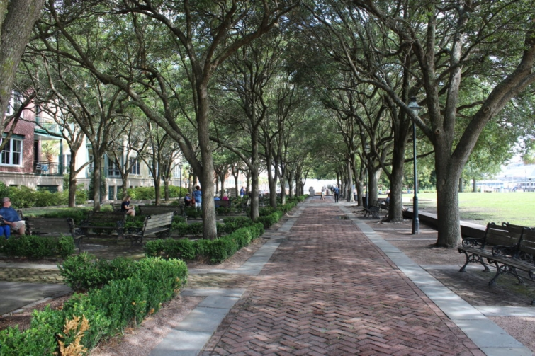
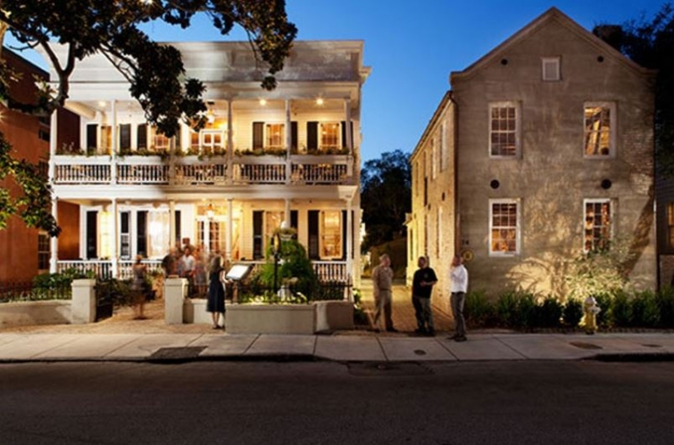
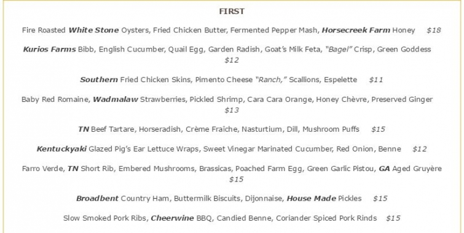

.png)
.PNG)
.PNG)
.PNG)
.PNG)
.PNG)
.JPG)
.JPG)
.PNG)
.PNG)



Welcome back! The last time we were together, it was evening and we had checked into our hotel, The HarbourView Inn located in Charleston, SC. Today I want to share some of the sites we visited while we were there. When I was making plans for this trip, I kept reading good reviews for a restaurant named Husk.

The award winning restaurant cooks up fresh Southern food from its garden and local farms (with a menu that changes daily based on what is in season.)
 source
source
But it is so award winning and so well liked that its reservations are booked up for weeks (and sometimes months) in advance. 🙁 No reservations were available for us during the time we were there, so if you are headed to Charleston and want to dine at Husk make your reservations as soon as you can. Since we could not dine there, we chose a seafood restaurant that is a long time Charleston favorite: Hyman’s.

It was too dark to take photos when we were there, so I am borrowing a few from the internet. If you would like to see their menu, just click here. Every kind of notably famous person has dined at Hyman’s – from Jimmy Buffet to Sandra Bullock, and Martha Stewart to Michael Phelps and Neil Armstrong. (They have them all listed on the menu.) There are plaques on the tables and plates on the walls hung where the celebrity dined. So it makes for a very fun atmosphere (along with the boiled peanuts they bring to your table. 🙂 )

My husband and daughter both thought their seafood meals were very good. (I can’t vouch for it because I just had a salad.)
The next morning we had breakfast in our hotel room and then started our walk around the city.

Our first destination was Charleston’s Waterfront Park right across from our inn. The park opened in 1990, the spring after the very destructive Hurricane Hugo hit the city.

We strolled to the end of Vendue Wharf to see the fishermen there.

Not far from the Waterfront Park, you could also see a cruise ship docked.
 There are benches all along the 1200 ft. esplanade.
There are benches all along the 1200 ft. esplanade.

People are encouraged to wade and get wet in the Pineapple Fountain that is in the middle of the park’s grassy area.

On the other side of the lawn is this oak lined brick walk…

and beautiful old homes stand on the other side looking out at the water.

Our daughter had specifically listed Rainbow Row as a place she wanted to see, so we headed up to East Bay Street.

Going a little further up E. Bay we came to the Old Exchange building , a former Revolutionary War prison, a place of slave trading, and a former City Hall. Due to our tight schedule we did not take the tour of it, but I have heard that it is an excellent one to do and really gives you a good overview of the building and what role it played in Charleston’s long history.
 We continued walking from E. Bay to King Street and came to this lovely park. I believe this one was Washington Square, a wonderfully shady spot to stop for a break.
We continued walking from E. Bay to King Street and came to this lovely park. I believe this one was Washington Square, a wonderfully shady spot to stop for a break.

And then we turned and strolled up King Street. I knew that a number of scenes from the Nicholas Spark’s movie, The Notebook were filmed in Charleston. I remembered the one of Noah and Allie in front of a movie theater, but I could not remember the name of it. So as we came to theaters, I snapped photos of them.
First, the very Art Deco styled Riviera…

then The Sottile, owned by the College of Charleston.

It turns out it was neither of them, but rather the American Theater, further on up King Street.
(This theater is now used as a conference and event facility.)

There was a lot of shopping to be done on historic King Street! It has 3 different parts to it. The lower part is the antique district; the middle area is for fashion, and the upper one is the King Street “Design and Dining” district.

One of the restaurants I would like to try when we return again is Nick’s on King Street. (We passed it too early for our lunch.) Our daughter was visiting Charleston a couple of weeks ago. She ate at Jim ‘N Nick’s and thought the food there was wonderful…especially the side dishes!

We stopped in a number of local shops and a few big brand named ones like Pottery Barn, Williams Sonoma, and Anthropologie. One place I wish we had stopped – if just for a snack- was Callie’s Biscuits.

Those biscuits have been highly recommended in a number of magazines, and I would love to try a warm one straight from the shop. I have read that a Callie’s has opened in the Virginia-Highlands area of Atlanta, so perhaps we can make it there if we don’t get back to Charleston anytime soon.
After shopping for awhile, we decided to wander through some of the residential areas there in the historic district.

There were beautiful window boxes at every turn.

And pretty courtyards to see.
The old brick added so much character to the gardens.


And then it was time for lunch.
I had made reservations at Magnolia’s, located back on East Bay Street in an old warehouse from the 1820’s.
Sorry for the fuzzy photo. I had a hard time with the lighting in there!

Our lunches were all very good…especially my fried chicken with mashed potatoes, collard greens, and corn!

After lunch we took a short break to relax at the hotel. Then we hopped in the car and headed out of town to take in a tour of an amazing historic garden.

And I’ll tell you all about it in the next travel post. 🙂
Thanks for coming along with us as we have visited Charleston!
Until next time…


.PNG)
I love Charleston! It’s such a fun city to walk around and the tours are wonderful. When we stayed there we were at Two Meeting Street Inn; the white house with round porch and looks like a wedding cake! It’s so pretty and across the park. Poogan’s porch is a favorite of mine to dine.
Also, I love the beaches there…Isle of Palms is wonderful! You need to make another trip to see everything!
——————————————————————–
We do need to make another trip…a long one! And I need to add all of your suggestions to our itinerary next time.
Thanks for all the recommendations Robin!
Kelly
Hi Kelly,
We ate at Husk last year about this time without a reservation. We waited out front and checked as soon as they opened. They seated us on the porch which was lovely. The meal was delicious. Maybe they sometimes leave an open table or two. There are so many choices for wonderful dining in Charleston you can hardly go wrong with most of them.
I have enjoyed your rememberances of Charleston.
Linda
A lovely tour of Charleston. I was just reading about it in Southern Lady last week, and texted my travel partner(cousin), that I thought there was a trip calling us there next spring! How wonderful to get your recent take as well. I so appreciate it.
Hi Kelly! Excellent tour! You’re always so much better than the guide books! Such a great start to my day “accompanying” you as you walk around Charleston …hoping to visit one day.It looks such a beautiful city.
All the restaurants you mention sound great.
Looking forward to the next part 🙂
Have a good day!
Rosemary
Enjoying your Charleston posts, Kelly! Like another of your fans, Vicki, I live in B’ham, home of Jim ‘N Nick’s. Hadn’t realized they’d ranged so far afield of their home town! I hope you tried the cheese “biscuits” (which I would call mini-muffins). They’re fabulous! If you tried them and liked them, know that J&N’s sells the mix. I gave it to several friends for Christmas, and it went over well. Loving all your travel notes and photos, and hope to make it to Charleston soon, and to follow in many of your footsteps!
Kelly,
I love Charleston too!
Last time we were there we stayed @ the Vendue and loved it. That waterfront area is beautiful. I agree with Kathy, the horse and buggy tours are worth it, fun and informative.
I look forward to the next post.
DiAnne
Great post, Kelly! I love Charleston! I know they are touristy, but I love taking the horse and buggy tours. I always learn something new. Our family has also done the walking ghost tours at night. Another fun thing my husband and I like to do is The French Quarters Art Walk. They are only held the first Friday evenings of certain months. These are just some fun things for you to do should Hayley land in Charleston. I am excited about your next post!
Thanks for Part 2 of the tour…Love Magnolias!!! I have the same thing every time we go…the Fried Chicken!
On the menu it mentions, “Fried Chicken Butter.” Pray tell, I wonder what that is? I can’t wait to see more of your trip because Charleston is high on my list of “wanna-goes!”
What a timely post! We were just discussing this very afternoon a short trip either to Charleston or New Orleans or Savannah. I was lobbying for Charleston. I used to visit a friend who passed on last year, and have not been back for a while. The food is good pretty much anywhere you go there, I think. I remember my first experience with she-crab soup — heavenly!
Oh Kelly, I was so hoping you ate at Husk!! Sean Brock is from my hometown. 😀 I want to eat there in September when our niece gets married, but I’m not sure we’ll have a chance due to wedding festivities and helping babysit. I’ll definitely remember to make reservations early though! I’m sure most every restaurant in Charleston is great. Can you imagine living in the vicinity? Ha, you would be eating out and trying all the fabulous places all the time. 😉 There are so many beautiful buildings and architecture to see. Thanks for the tour! 🙂 Can’t wait to see which garden you toured.
I fell in love with Charleston the first time my husband and I went to visit a friend of his who lived in a gorgeous neighborhood there. It exudes “southern graciousness and unique beauty.” Thank you for letting us tag along on your trip and reminding me of a beautiful trip we took and why I love that area so much! Your photographs do it great justice.
We live in Birmingham, home of Jim n’ Nicks! They have really gotten around over the years. Looking forward to the garden tour – one of my favorite places! Along with the other two plantations located beside it!
Thanks for the fun trip…I want to get back there soon!
Mary Ann
Loving the tour so far! I think King Street would be my primary focus, then the historical parts. I tend to spend way too much time when touring historical museums, so I learned to do them late day, so they will kick me out to close! Ha! Of course, the water views would be first, being a midwesterner! Have a great day, and thank you!
I don’t think I could ever see enough photos of that lovely city! There is truly no place like it! Enjoy your Sunday!
Shelley
Going in May and have a reservation at Husk! You are a great tourist guide,
thank you.
Such a fun post to wake up to, Kelly, a tour of a beautiful southern destination. Enjoy the restaurant posts especially:) Your chicken dinner looked scrumptious! Thanks for sharing.
What a lovely tour of Charleston! Thanks for sharing your trip and the tip about Husk.
I’ve been wanting to eat there so I’ll plan far ahead! ~Anne